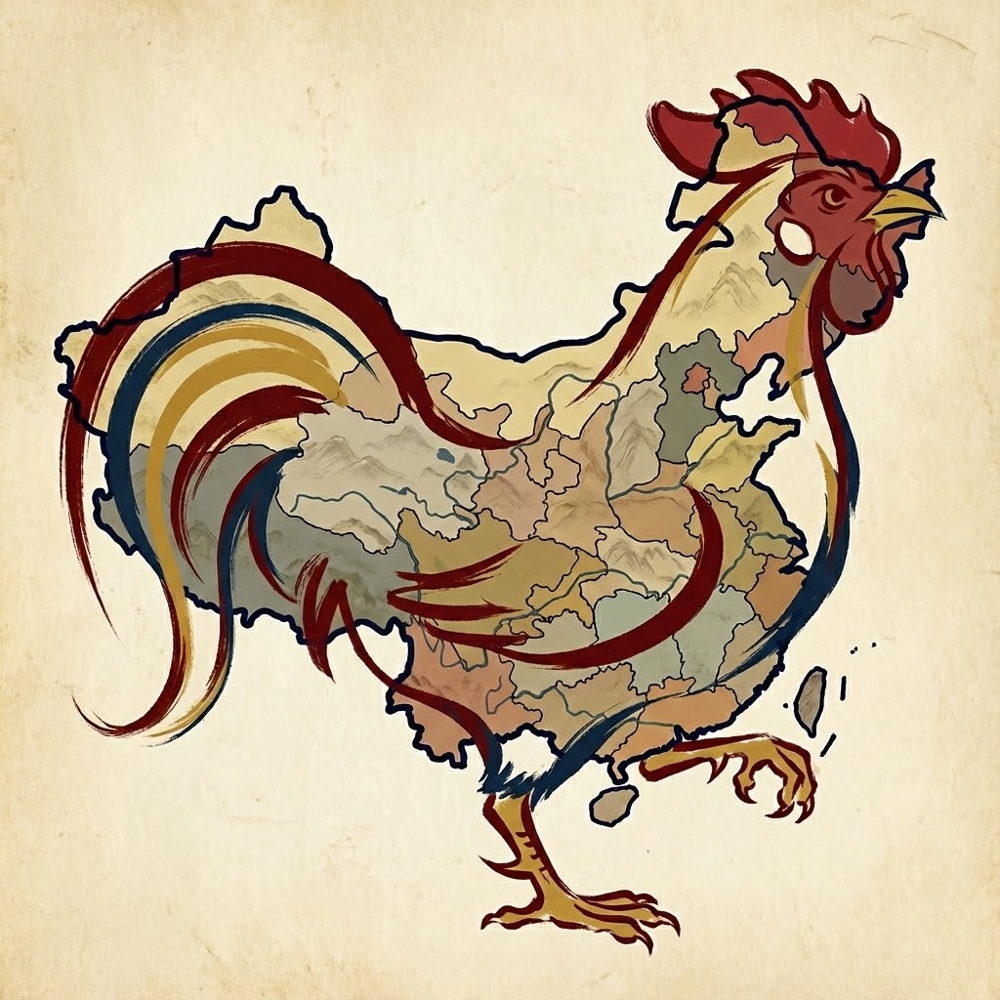
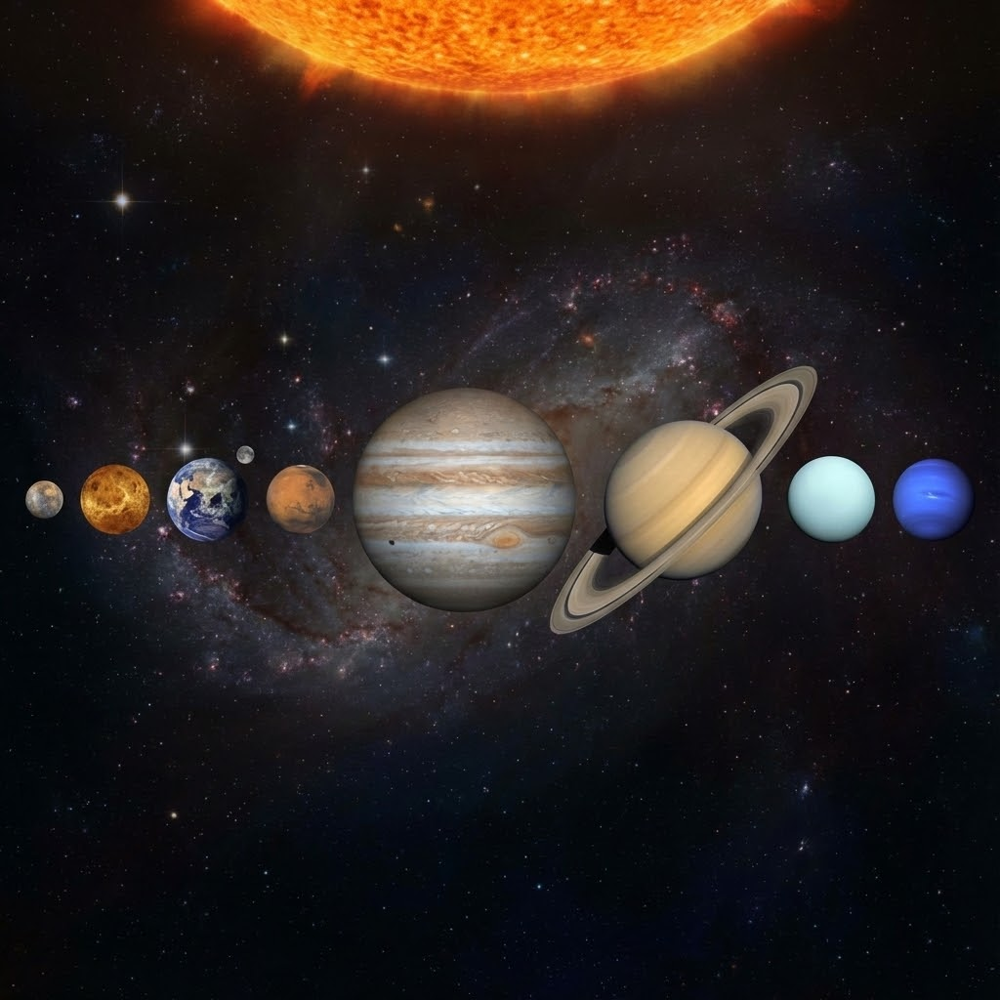

我 们 的 家 园
从南山出发，飞向宇宙
探索之旅站点列表
从我们生活的南山出发，一步步飞向广阔的宇宙
01
我们生活的城市
深圳·南山
02
我们所在的省份
广东省
03
我们的国家
中华人民共和国

04
中国所在的大陆
亚洲
05
我们生活的星球
地球
06
我们的恒星社区
太阳系

07
千亿星辰的岛屿
银河系
08
一切的总和
宇宙
09
探索之旅总结
讲师寄语
查看总结回顾表
↑ 返回顶部